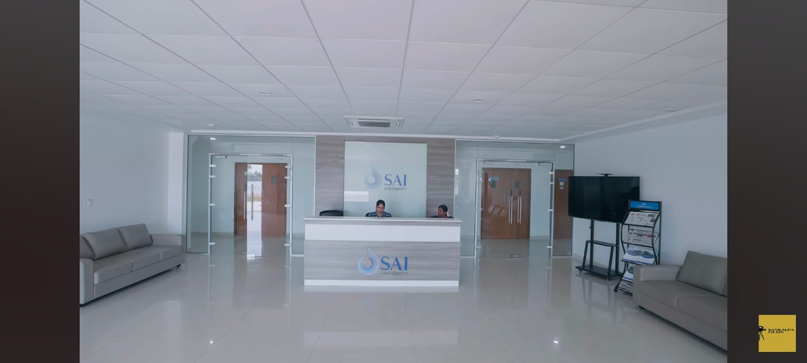

About Our Club
Sai University Club is a place where students from different departments can come together, learn new things and take part in university activities.
The club encourages students to share their ideas, explore their interests and participate in activities outside the classroom.
Our Reception

The reception area is a welcoming place where students and visitors can get information about the university and club activities.
Students can also get information about upcoming events, programs and other activities.
Our Club Activities
Technical Activities
The technical club provides students with opportunities to learn and improve their technical skills. Students can participate in workshops, coding sessions and other technical activities.
Students who are interested in technology can join these activities and learn by working with other students.
Sports and Games
The sports club encourages students to take part in different games and sports activities. Students can participate in cricket, volleyball, badminton and other sports.
These activities help students stay active, build teamwork and spend time with other students.
Cultural Activities
The cultural club gives students an opportunity to participate in music, dance, celebrations and other cultural programs.
Students who are interested in cultural activities can take part in these programs and share their talents with others.
Club Members
Technical Club
The Technical Club is managed by a club head along with student coordinators and volunteers. Students who are interested in technology can also volunteer and help during workshops, coding sessions and other technical activities.
Sports and Games Club
The Sports and Games Club is guided by a club head and supported by student coordinators and volunteers. Volunteers help in organizing games, sports events and other related activities.
Cultural Club
The Cultural Club is managed by a club head with the support of student coordinators and volunteers. Students can volunteer and help in organizing cultural programs, celebrations and other events.